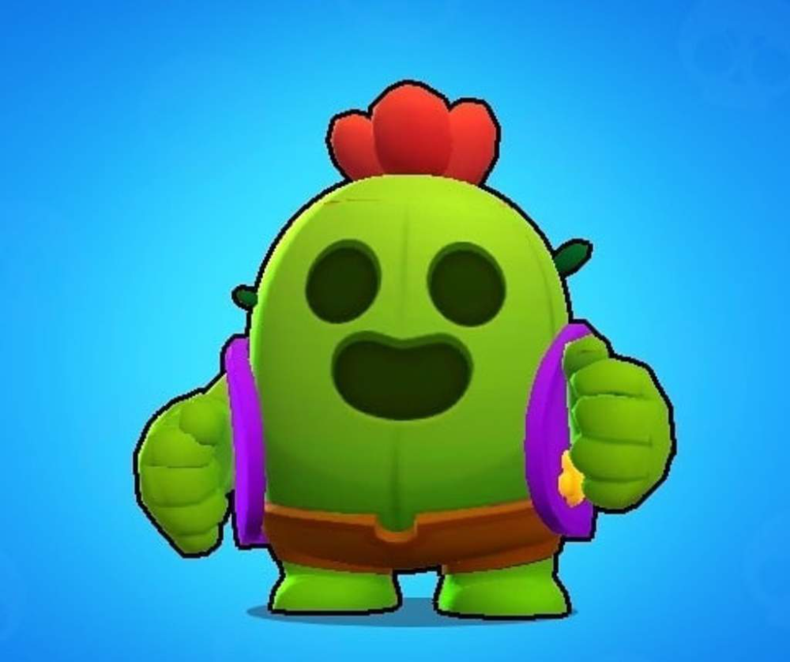

Brawl Stars (британское произношение: [bɹɔːl stɑːz]) — игра для мобильных устройств в жанрах MOBA и геройский шутер, разработанная и изданная финской компанией Supercell. Глобальный релиз состоялся 12 декабря 2018 года.
Столкновение (англ. Showdown) — режим в жанре Королевской Битвы, не имеющий временных ограничений. Есть 2 типа режима — одиночное и парное. В одиночном столкновении побеждает последний выживший среди 10 игроков, а в парном — последняя выжившая команда из 2-х игроков среди 5 команд (тоже по 2 игрока). По карте разбросаны коробки с кубиками усиления, которые повышают здоровье и урон игрока, а также со временем карта будет сужаться к центру ядовитыми облаками, наносящими возрастающий урон игрокам каждую секунду[7][8][9].
Броулбол (англ. Brawlball) — режим 3 на 3 игрока, где главная задача — забить 2 гола в ворота противников, управляя для этого специальным мячом. Если не было забито второго гола, то побеждает команда с большим счётом. Если счёт равный, то игрокам даётся 1 минута для забивания гола, однако препятствия на карте будут разрушены. Если за дополнительное время ни одна команда не сможет забить гол, то игрокам присваивается ничья.
Нокаут (англ. Knockout) — режим 3 на 3 игрока, где главная задача — победить в двух раундах, каждый из которых длится максимум по 1 минуте. Та команда, в которой не осталось игроков или осталось меньше, чем в противоположной проигрывает, если же по истечении времени игроков одинаково в обеих командах, раунд выигрывает та команда, которая нанесла больше урона.
Также есть две пары попеременно чередующихся между собой режимов:
>
Ограбление (англ. Heist) — режим 3 на 3 игрока, где главная задача — уничтожить сейф врагов, защищая собственный. Если с течением времени ни один из сейфов не будет уничтожен, то побеждает та команда, у которой здоровье сейфа выше вражеского. Если по прошествии времени обоим сейфам был нанесён одинаковый урон в процентах, то игрокам присваивается ничья[9].
Горячая зона (англ. Hot Zone) — режим 3 на 3 игрока, где главная задача — как можно больше времени стоять на точке, тем самым захватывая её. Побеждает та команда, которая набрала 100 %, путём захвата всех, либо одной точек.
Награда за поимку (англ. Bounty) — режим 3 на 3 игрока, где главная задача — заработать как можно больше звёзд, чем у противников. Звёзды зарабатываются путём убийства противника. В начале игры в центре карты есть дополнительная звезда. Когда один из игроков убивает другого, то к счёту игрока добавляется звезда. Количество заработанных звёзд определяет награду за убийство игрока, после которого количество звёзд обнуляется[9].
Осада (англ. Siege, удалён из игры 31 августа 2022 года) — режим 3 на 3 игрока, где главная задача — уничтожить базу противника. Отличие этого режима от «Ограбления» проявляется в возможности базы самостоятельно обороняться от противников, которые находятся в зоне её действия. С начала игры в центре карты появляются болты. Команда, собравшая больше болтов за отведённое время, сможет призвать себе на помощь робота, который идёт к вражеской базе, попутно сражаясь с противниками. Чем больше болтов соберёт команда, тем сильнее робот.
Дуэли (англ. Duels) — в данном режиме игроки выбирают по 3 бойца, за которых будут сражаться друг с другом. Выигрывает тот игрок, который победил трёх бойцов противника.
Погрузка (англ. Payload, удалён из игры 27 апреля 2022 года) — режим, в котором у каждой команды есть один полезный груз, который они должны довести до конца рельсов. Выигрывает та команда, которая дотолкает свой груз до финальной цели.
Зачистка (англ. Wipeout) — в данном режиме участвуют две команды, состоящие из трёх игроков каждая. Цель — уничтожить противников 8 раз, не дав противнику сделать то же самое. Когда одна команда совершает 8 убийств, она побеждает. По истечении 2 минут, если обе команды не смогли уничтожить 8 противников, побеждает та команда, у которой больше убийств. Если у обеих команд одинаковое количество убийств, матч заканчивается вничью.
Баскетбой (англ. BasketBrawl) — режим 3 на 3, в котором надо попасть мячом в кольцо, которое постоянно двигается. В этом режиме самые маленькие карты в игре. Играют в этом режиме до 5 очков. За попадание за линией — 3 очка, после линии — 2 очка.
Волейбой (англ. VolleyBrawl) — режим 3 на 3, в котором нужно ударить по мячу чтобы он упал на сторону противника. Играют в этом режиме до двух очков. За попадание — 1 очко.
Захват кристаллов (англ. Gem Grab) — режим 3 на 3 игрока, где нужно собирать кристаллы, которые появляются каждые 7 секунд из шахты. При убийстве противника игроком, все кристаллы противника выпадают на землю и могут быть подобраны любым другим игроком. Индикаторы обеих команд отображают сумму кристаллов, имеющихся у всех их участников на данный момент. Задача каждой команды — собрать 10 или больше кристаллов, после чего продержать их у себя до конца игры. Когда одна команда соберёт 10 кристаллов, начнётся отсчёт до конца игры. Этот отсчёт можно прервать, если отобрать у вражеской команды нужную часть кристаллов, убивая её участников, либо же собрав равное с вражеской командой количество кристаллов. По прошествии отведённых до конца 15 секунд победа присуждается команде с наибольшим количеством кристаллов[7][8][9].
Дополнительно существует режимы, которые появляются по выходным:
Бой с боссом (англ. Boss Fight) — в данном режиме надо уничтожить робота-босса, а также обороняться от его миньонов. Сложность увеличивается с каждым пройденным уровнем сложности;
Роборубка (англ. Robo Rumble) — в данное режиме необходимо защищать сейф от роботов, которые с каждым возрастанием волны становятся сильнее. Как и Бой с боссом, сложность увеличивается с каждой победой;
Большая игра (англ. Big Game) — режим, в котором 5 игроков пытаются уничтожить другого игрока, Мегабойца, который имеет много очков здоровья и огромный урон. Если за 2 минуты игроки победят Мегабойца, то победа достанется им, а если Мегабоец продержится такое время — победит он.
Есть и особые события:
Мегакопилка (англ. MegaPig) — в данном событии могут участвовать только участники клубов, событие проводится раз в месяц и длится 3 дня. За прохождение события даются внутриигровые награды такие как «Призы Старр».
Чемпионат (англ. Championship) — данное событие начинается в начале года, и доступно раз в месяц до середины года, событие состоит из трёх этапов (испытание, квалификация и финал). За прохождение испытания команде полагается выход в квалификацию, после прохода которой команда может поучаствовать в финале ежемесячного отбора. Через полгода после начала события команды прошедшие в финал могут поучаствовать в мировом финале Чемпионата с денежными вознаграждениями[10].
Начиная с 12 мая 2020 года, в игре выходят сезоны, которые включены в сезонный пропуск Brawl Pass.
Разработка
Supercell хотели разработать командную игру для мобильных устройств, похожую на League of Legends и Overwatch. По словам Фрэнка Кайенбурга, менеджера сообщества игры, разработчики «сосредоточились на том, чтобы сохранить большую проработанность игры, убрав при этом всё лишнее»[11].
Первый прототип игры под названием Project Laser был создан в 2016 году[12]. В нём игрок управлял персонажем нажатием на экран, а при вхождении врага в зону видимости персонаж атаковал его автоматически. Тестировщики жаловались на медленный геймплей и слабый контроль действий, поэтому в этом же году была разработана первая итерация под названием Laser 2, где персонаж уже атаковал смахиванием, а игра была переведена в вертикальный режим. По словам Антти Суммала, представителя Supercell на Game Developers Conference в марте 2019 года в Сан-Франциско, это было сделано для более естественного удержания мобильного устройства[12].
В марте 2017 года была выпущена вторая итерация под названием Slugfest, игра перешла в стадию UAT-тестирования[12]. Антти говорил, что «тестировщики и мои коллеги сообщали, что они чувствовали себя настолько перегружены процессом сражения [в игре], как будто им надо было делать по 250 действий в минуту»[12], и поэтому вскоре была выпущена третья итерация, которая добавила вариант управления с виртуальным джойстиком ходьбы и стрельбе по нажатию, но это не исправило ситуацию, поскольку в конечном итоге джойстик дрейфовал по всему экрану.
Несмотря на это, 14 июня 2017 года Supercell анонсировала игру в прямом эфире на YouTube[13]. На следующий день игра получила мягкий запуск на iOS в канадском App Store[14].
Во время мягкого запуска Supercell заметили, что игроки чаще используют виртуальный джойстик вместо нажатия для ходьбы, поэтому 9 марта 2018 года игра была обратно переведена в горизонтальную ориентацию, чтобы «сделать виртуальный джойстик ещё удобнее»[15]. После неоднозначной реакции от игроков, Райан Лайтон, бывший менеджер сообщества Brawl Stars, пояснил, что команда «выбирала не между горизонтальным и вертикальным режимом, а между горизонтальным режимом и прекращением разработки игры»[16].
26 июня 2018 игра была выпущена на платформе Android[2] в некоторых странах. 12 декабря 2018 года состоялся полноценный релиз игры[17].
9 марта 2022 года компания Supercell объявила об удалении своих игр, включая Brawl Stars, из магазинов App Store и Google Play в России и Белоруссии в связи с вторжением России на Украину[18][19].
25 апреля 2023 года компания Supercell заблокировала доступ к игре Brawl Stars на территории России и Белоруссии сразу после выхода нового обновления в игре[20].